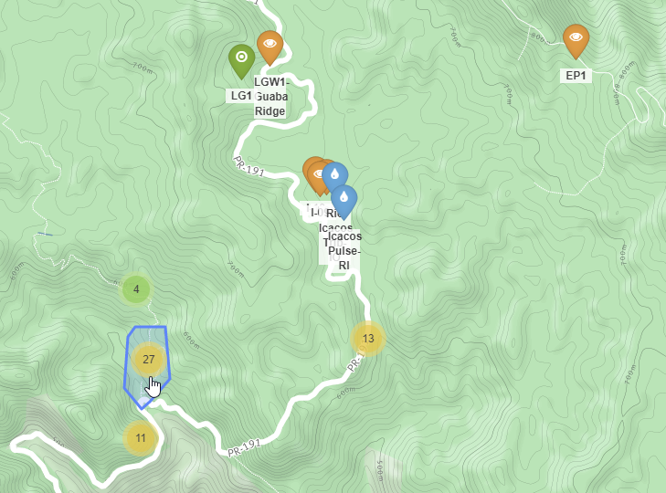
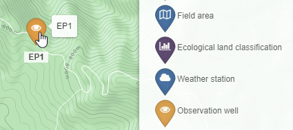

ODM2 Admin Settings¶
To configure ODM2 Admin for your site you will want to change the some of settings in the file:
templateAndSettings/settings/development.py (https://github.com/ODM2/ODM2-Admin/blob/master/templatesAndSettings/settings/development.py)
Many of these settings are described in the Django documentation https://docs.djangoproject.com/en/1.10/ref/settings/#databases see https://docs.djangoproject.com/en/1.10/topics/settings/ documentation for information about the following settings:
DEBUG=TRUE
ALLOWED_HOSTS=['127.0.0.1',]
For information on databases see https://docs.djangoproject.com/en/1.10/ref/settings/#databases
DATABASES = {
'default': {
'ENGINE': 'django.contrib.gis.db.backends.postgis',
'NAME': 'db_name',
'USER': 'user',
'PASSWORD': 'password',
'HOST': 'localhost',
'PORT': '5432',
'OPTIONS': {
'options': '-c search_path=public,admin,odm2,odm2extra'
}
}
}
For information on email settings see https://docs.djangoproject.com/en/1.10/ref/settings/#email-backend
EMAIL_HOST = 'smtp.host'
EMAIL_HOST_USER = 'user'
EMAIL_HOST_PASSWORD = 'password'
EMAIL_FROM_ADDRESS = 'do-not-reply-ODM2-Admin@cuahsi.org'
3rd Party Django Package settings¶
For recaptcha settings information see https://github.com/praekelt/django-recaptcha
RECAPTCHA_PUBLIC_KEY = 'googlerecaptchakey'
RECAPTCHA_PRIVATE_KEY = 'googlerecaptchaprivatekey'
Custom ODM2 Admin settings¶
MAP_CONFIG defines properties of the ODM2 Admin map /mapdata.html in an ODM2 Admin instance, also found under the shortcut Graph My Data -> Map Sample Locations
MAP_CONFIG = {
"lat": 0,
"lon": 0,
"zoom": 11,
"cluster_feature_types": ['Profile','Specimen','Excavation','Field area'],
"time_series_months": 1,
"display_titles": True,
"MapBox": {
"access_token": 'mapbox accessToken'
},
"result_value_processing_levels_to_display": [1, 2, 3],
"feature_types": ['Site','Profile','Specimen','Excavation','Field area','Ecological land classification',
'Weather station','Observation well','Stream gage','Transect']
}
lat and lon define the center of the map and the zoom level indicates the initial zoom level of the map. cluster_feature_types indicates which features should be grouped into clusters.
A group of clustered sites
EP1 is not clustered due to the sampling feature type Observation well not being listed in the cluster_feature_types map setting.
"MapBox": {
"access_token": 'mapbox accessToken'
},
Visit MapBox to get an access token.
https://www.mapbox.com/help/how-access-tokens-work/#mapbox-tokens-api
DATA_DISCLAIMER = {
"text" : "Add a link discribing where your data come from",
"linktext" : "The name of my site",
"link" : "http://mysiteswegpage.page/"
}
Add general information about the organization that generated the data. This will appear on publicily available pages where your data are viewable.
SENSOR_DASHBOARD = {
"time_series_days": 15,
"featureactionids": [1699, 1784,1782,1780,1701,1707,1778,1779],
}
In the Sensor dashboard configuration “featureactionids” add sampling feature actions, related to sensor time series results, to the sensor dashboard. Feature actions listed here will be present in a drop down list on the sensor dashboard page.
The sensor dashboard can be found by visiting ‘Graph My Data’ -> ‘Sensor Dashboard’.